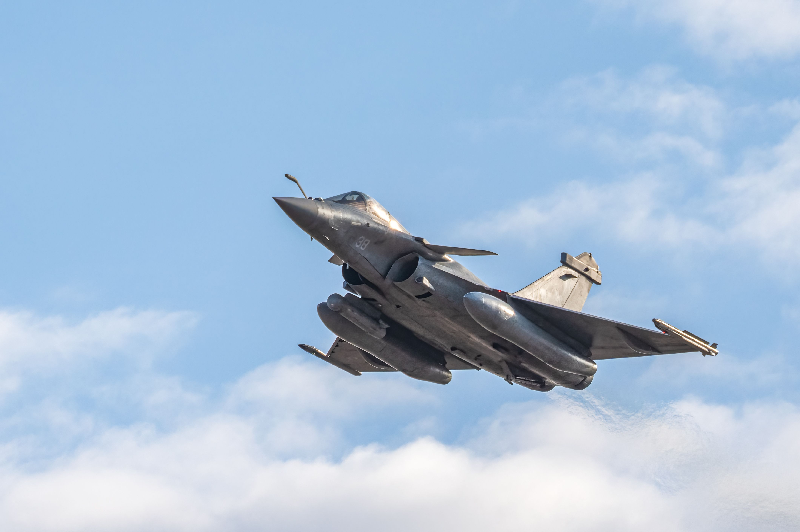
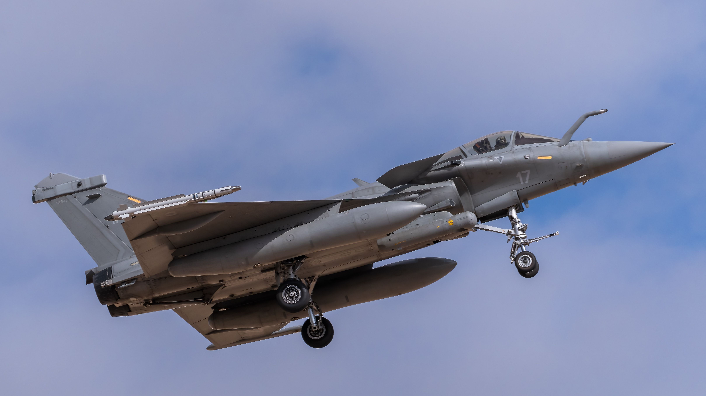
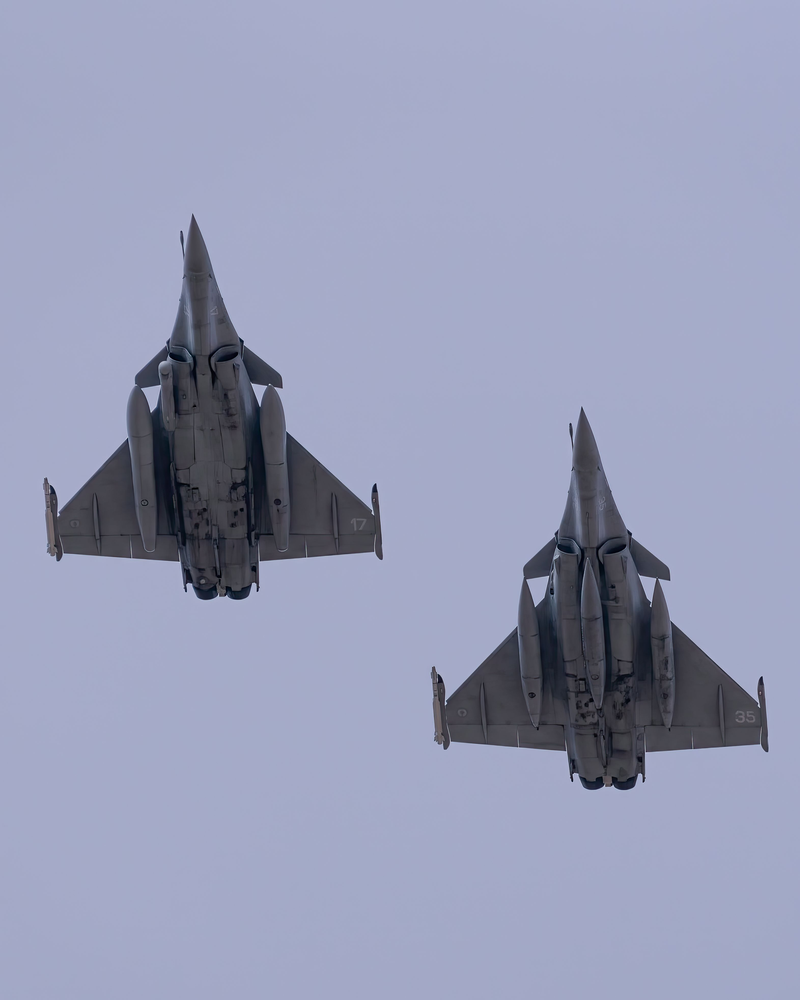

The Dassault Rafale: A Comprehensive Overview The Dassault Rafale (meaning "gust of wind" or "burst of fire" in French) is a French twin-engine, canard delta-wing, multirole fighter aircraft designed and built by Dassault Aviation. Widely recognized as one of the most capable and versatile 4.5-generation fighter jets in the world, the Rafale was developed to perform a wide range of combat missions for both the French Air Force and the French Navy. Key Design and Features Omnirole Capability: Unlike many fighters specialized in a single role, the Rafale was designed from the ground up as an "omnirole" aircraft. It can seamlessly switch between air-to-air combat, ground attack, reconnaissance, and even nuclear deterrence missions (carrying the ASMP-A nuclear missile) during the exact same flight. Canard-Delta Configuration: The combination of a delta wing and close-coupled canards (small forewings) provides exceptional maneuverability, outstanding agility at both high and low speeds, and excellent short-takeoff-and-landing performance. Advanced Avionics & Radar: The aircraft is equipped with the Thales RBE2 active electronically scanned array (AESA) radar, providing superior target tracking, jam resistance, and long-range detection. It also features the SPECTRA electronic warfare system, which provides self-defense by actively detecting, jamming, and confusing incoming threats. Sensor Fusion: The Rafale integrates data from multiple sensors—including radar, optronic systems, and electronic warfare suites—presenting the pilot with a unified, intuitive tactical picture on advanced head-up and head-down displays. Variants The Rafale is produced in three main versions, sharing a high degree of commonality in airframe, software, and systems: Rafale C: Single-seat, land-based version operated by the French Air and Space Force. Rafale B: Two-seat, land-based version used for training and operational missions requiring a weapons systems officer. Rafale M: Single-seat, carrier-capable version operated by the French Navy. It features a reinforced landing gear, a stronger tailhook, and structural modifications to handle catapult launches and arrested landings on aircraft carriers like the Charles de Gaulle. Operational History and Global Success The Rafale has seen active combat deployment in numerous high-stakes environments, including conflicts and peacekeeping operations in Afghanistan, Libya, Mali, Iraq, and Syria, where it proved its reliability and combat effectiveness. While initially slow to secure international export contracts, the Rafale has experienced a major surge in global popularity. Alongside the French Armed Forces, it has been adopted by several international operators, including: Egypt, Qatar, and India (for both the Indian Air Force and Indian Navy) Greece, Croatia, the United Arab Emirates (UAE), and Indonesia


The Dassault Rafale's weapons integration is central to its designation as an "omnirole" fighter. Its structural design allows it to carry an external payload exceeding 9.5 metric tons (21,000 lbs)—often carrying weapons and fuel loads that exceed its own empty weight. 1. Internal Cannon GIAT 30/M791: A single-barrel 30 mm autocannon mounted internally on the right side of the airframe. Performance: Capable of firing 2,500 rounds per minute. It is primarily designed for high-speed air-to-air dogfighting passes and close-range ground strafing. 2. Hardpoints and Payload Capability Land Variants (Rafale B/C): 14 hardpoints (payload attachment stations). Naval Variant (Rafale M): 13 hardpoints (the forward centerline pylon is omitted to accommodate catapult launch gear). Five of the hardpoints are heavy-duty, designed to support heavy air-to-ground ordnance, cruise missiles, or large drop tanks for long-range missions. 3. Air-to-Air Weapons MBDA Meteor: A beyond-visual-range air-to-air missile (BVRAAM) powered by a ramjet engine. It provides the Rafale with long-range interception capabilities and a large "no-escape zone". MBDA MICA (IR/EM): Multi-mission air-to-air missiles equipped with either Infrared (IR) or Active Radar (EM) homing seekers. They serve dual roles for close-range visual dogfighting and medium-range BVR engagements. Modern units are being upgraded with the MICA NG (Next Generation). 4. Air-to-Ground Ordnance AASM Hammer (Armement Air-Sol Modulaire): Precision-guided smart munitions equipped with guidance kits (GPS/Inertial, Laser, or Infrared) and rocket boosters to extend stand-off strike range. SCALP EG / Storm Shadow: A long-range, stealthy, air-launched cruise missile designed for deep-strike precision attacks against heavily fortified high-value target infrastructure. Laser-Guided Bombs: Compatible with standard Paveway series laser-guided bombs. SPECTRA Defensive Suite: Integrated electronic warfare suite that detects, identifies, and jams incoming enemy radar/missile threats, automatically dispensing chaff and infrared flares to protect the aircraft.